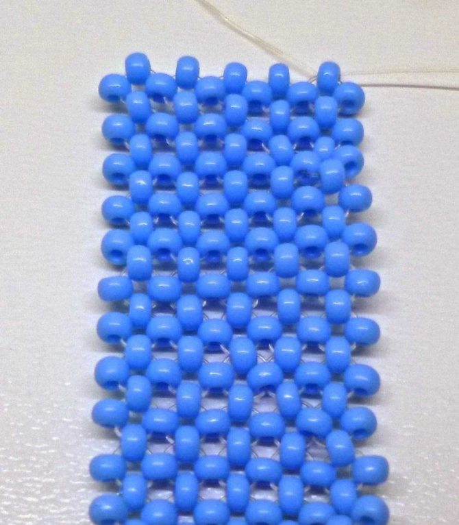
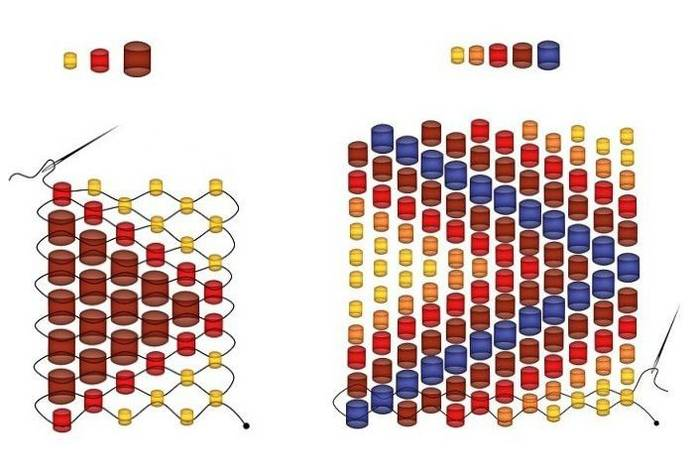
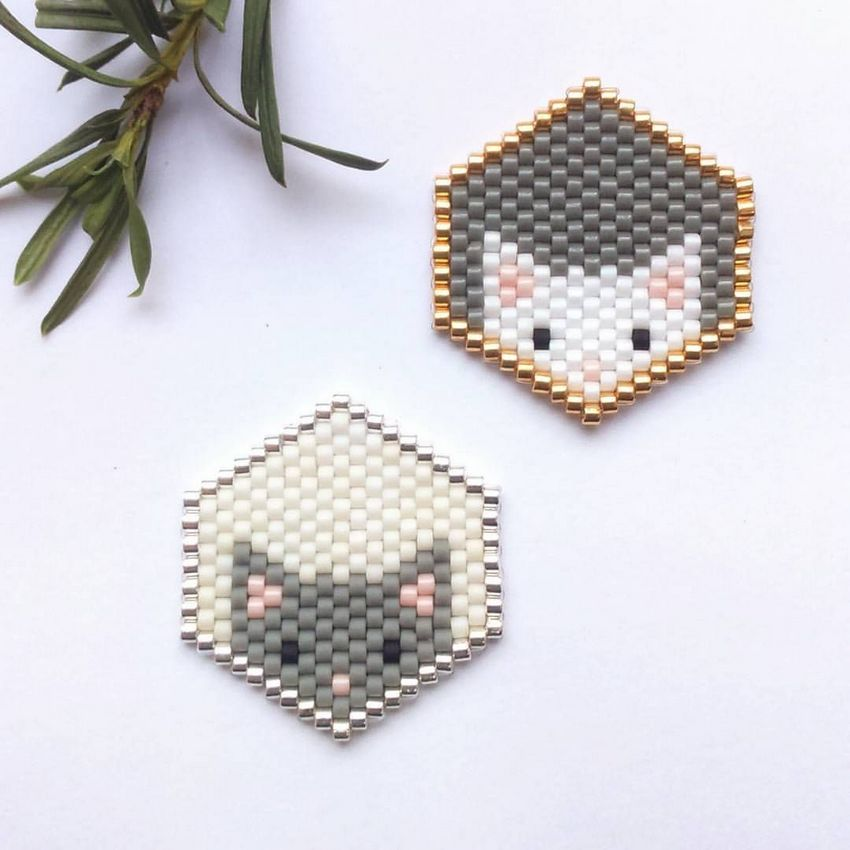

Монастырское плетение (крестик) – техника плотного плетения бисером, в которой на каждом отдельно взятом отрезке полотна бисерины, расположенные под углом 90 градусов друг к другу и связанные по 4 штуки, образуют подобие крестов.
Мозаичное плетение, или пейот, – это техника плетения из бисера с помощью иголки и нитки. В Африке во многих традиционных культурах ее используют по сей день для изготовления головных уборов и украшений, обладающих особым символическим значением. Однако даже тем, кто далек от африканских традиций, может пригодиться знание о мозаичном плетении. В зависимости от конкретных приемов, вы можете сплести плоские полоски, жгуты или плоские круги для создания бисерных сумочек, украшений, картин и других декоративных элементов. Прочитайте нашу статью, чтобы узнать, как плести в этой технике. Существует несколько разновидностей мозаичного плетения; мы расскажем вам о способе, в котором используется четное количество бисерин. Для наглядности вместо бисера мы взяли более крупные бусины.
Одной из самых популярных техник плетения из бисера считается кирпичное плетение. Такую технику иначе называют «плетение каманчей». А представляет она собой чередование рядов в шахматном порядке, очень напоминающих кирпичную кладку. Несмотря на то, что внешне оно очень напоминает мозаику, кирпичное плетение имеет свои отличительное черты и преимущества. Его легко можно сузить, расширить или надстроить дополнительный элемент. Благодаря схожести кирпичного и мозаичного плетения бисером и незаметности линии перехода многие мастера в своих работах часто их комбинируют. Давайте разберёмся в особенностях этой техники более подробно.
